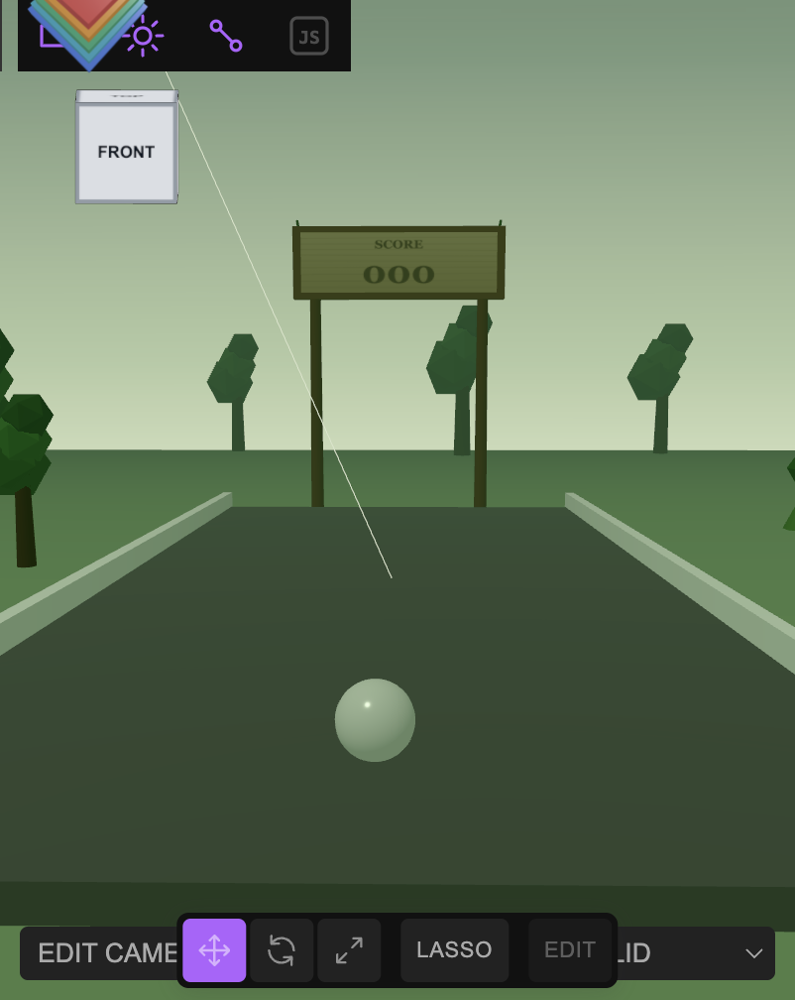

Build a bubble shooter scene
This scene deliberately stops short of gameplay: it builds a lane, a background, a sign — and exactly one bubble. Real bubble-shooter logic clones and recolors bubbles at runtime, so the scene's job is to hand that logic one well-formed, easy-to-find template rather than a whole pre-built grid. Open the editor, open the Shell tab, and paste each block in order.

findObject('Bubble') or $S('.bubble') needs to locate and .clone() later. Building a pre-filled grid of 40 bubbles would be guessing at a layout the actual game logic hasn't specified yet.1 Build the lane
A flat lane bounded by two rails reuses the exact structure from the pong table tutorial — a real receding surface, not a flat arcade screen, so the camera can stand at one end and look down its length:
const group = new Group();
group.name = 'Bubble Shooter';
const tableMat = new MeshStandardMaterial({ color: 0x1c5c3a, roughness: 0.7 });
const railMat = new MeshStandardMaterial({ color: 0xffffff, roughness: 0.5 });
const table = new Mesh(new BoxGeometry(12, 0.4, 24), tableMat);
table.name = 'Table'; table.position.set(0, -0.2, 0);
group.add(table);
const railL = new Mesh(new BoxGeometry(0.3, 0.5, 24.4), railMat);
railL.name = 'Rail Left'; railL.position.set(-6.15, 0.25, 0);
group.add(railL);
const railR = new Mesh(new BoxGeometry(0.3, 0.5, 24.4), railMat);
railR.name = 'Rail Right'; railR.position.set(6.15, 0.25, 0);
group.add(railR);
editor.execute(new AddObjectCommand(editor, group));2 Add exactly one clonable Bubble
A glossy, slightly translucent white sphere — pure template, no gameplay color yet. Tag it with a class as well as a name: a class survives being cloned N times without every clone colliding on one #id, so later code can do $S('.bubble') across every clone and findObject('Bubble') to find this original:
const bubbleMat = new MeshStandardMaterial({ color: 0xffffff, roughness: 0.2, metalness: 0.05, transparent: true, opacity: 0.88 });
const bubble = new Mesh(new SphereGeometry(0.45, 24, 24), bubbleMat);
bubble.name = 'Bubble';
bubble.position.set(0, 0.45, 9.5);
editor.execute(new AddObjectCommand(editor, bubble));
tagClass(bubble, 'bubble');const shot = findObject('Bubble').clone(); shot.material = shot.material.clone(); shot.material.color.set('#e0455a'); editor.execute(new AddObjectCommand(editor, shot)); — cloning the material too (not just the mesh) is the part that's easy to skip, and skipping it means recoloring one bubble silently recolors every clone that still shares the original material instance.3 Frame it with a rainforest
Same flat-clearing ground technique as the desert version in the pong tutorial — measure distance from the lane's true world center, not the ground mesh's own locally-offset origin, so undergrowth never rises above the lane's own surface. Trees are a trunk cylinder plus a few stacked icosahedra for foliage:
const jungle = new Group();
jungle.name = 'Rainforest Scenery';
const groundMat = new MeshStandardMaterial({ color: 0x2f4f2a, roughness: 0.95 });
const groundGeo = new PlaneGeometry(90, 90, 64, 64);
const gp = groundGeo.attributes.position;
const CLEAR = 15, FADE = 12;
for (let i = 0; i < gp.count; i++) {
const x = gp.getX(i), y = gp.getY(i);
const wz = -5 - y; // this ground mesh sits at position.z = -5 — see the note below
const d = Math.sqrt(x * x + wz * wz);
const t = Math.min(1, Math.max(0, (d - CLEAR) / FADE));
gp.setZ(i, Math.sin(x * 0.1 + 2.1) * Math.cos(wz * 0.11) * 0.35 * t);
}
groundGeo.computeVertexNormals();
const ground = new Mesh(groundGeo, groundMat);
ground.name = 'Moss Ground';
ground.rotation.x = -Math.PI / 2;
ground.position.set(0, -0.46, -5);
jungle.add(ground);
const trunkMat = new MeshStandardMaterial({ color: 0x4a3524, roughness: 0.9 });
const foliageColors = [0x2f6b32, 0x3a7d3e, 0x275c2b, 0x437f3f];
function makeTree(x, z, scale) {
const t = new Group();
t.name = 'Tree';
const trunk = new Mesh(new CylinderGeometry(0.22 * scale, 0.3 * scale, 3.2 * scale, 8), trunkMat);
trunk.position.set(0, 1.6 * scale, 0);
t.add(trunk);
for (let i = 0; i < 3; i++) {
// (i - x) can go negative — see the note below on JS's % operator.
const idx = ((i + Math.round(x)) % foliageColors.length + foliageColors.length) % foliageColors.length;
const foliage = new Mesh(new THREE.IcosahedronGeometry((1.1 - i * 0.18) * scale, 0), new MeshStandardMaterial({ color: foliageColors[idx], roughness: 0.85 }));
foliage.position.set((i - 1) * 0.35 * scale, (3.1 + i * 0.75) * scale, (i - 1) * 0.2 * scale);
t.add(foliage);
}
t.position.set(x, -0.15, z);
return t;
}
[[-11, 5, 1.1], [11.5, 8, 0.9], [-13, -8, 1.2], [13, -6, 1.0]].forEach(s => jungle.add(makeTree(s[0], s[1], s[2])));
editor.execute(new AddObjectCommand(editor, jungle));
editor.execute(new AddObjectCommand(editor, new AmbientLight(0xbfe0a8, 0.5)));
const canopyLight = new DirectionalLight(0xdfead0, 1.0);
canopyLight.position.set(-10, 26, 12);
editor.execute(new AddObjectCommand(editor, canopyLight));
setFog('FogExp2', '#4d6b52', 0, 0, 0.018);
setBackground('#5f7a63');gp.getY(i) on a ground plane gives coordinates in the plane's own local space, which is offset by wherever you positioned the mesh (position.set(0, -0.46, -5) here) — computing "distance from the lane's center" from raw local coordinates measures from the wrong point unless you correct for that offset first (wz = -5 - y above, derived from the plane's rotation.x = -Math.PI/2). Skipping this correction was exactly how an earlier version of this lane ended up with a sand dune poking up through the table. (2) JavaScript's % can return a negative result for a negative left-hand operand (-9 % 4 === -1, not 3) — indexing an array with that silently reads undefined instead of throwing, which surfaces later as a vague THREE.Material: parameter 'color' has value of undefined console warning and unexpectedly white geometry. The ((n % m) + m) % m pattern above always lands in range.4 Add a wooden, single-score sign
Two posts, a plank frame, and a canvas-textured panel — painted, not glowing, and one score, not two (a bubble shooter is one player against the board, not two paddles):
const bezelY = 8.8, bezelH = 2.6;
const postH = (bezelY - bezelH / 2) - (-0.46);
const woodMat = new MeshStandardMaterial({ color: 0x6b4a2f, roughness: 0.85 });
const sign = new Group();
sign.name = 'Wooden Scoreboard';
[-3.1, 3.1].forEach((x, i) => {
const post = new Mesh(new CylinderGeometry(0.2, 0.24, postH, 8), woodMat);
post.name = i === 0 ? 'Post Left' : 'Post Right';
post.position.set(x, -0.46 + postH / 2, -14);
sign.add(post);
});
const frame = new Mesh(new BoxGeometry(7.8, bezelH, 0.4), new MeshStandardMaterial({ color: 0x7a5636, roughness: 0.8 }));
frame.name = 'Sign Frame';
frame.position.set(0, bezelY, -14);
sign.add(frame);
const c = document.createElement('canvas');
c.width = 512; c.height = 176;
const ctx = c.getContext('2d');
const grad = ctx.createLinearGradient(0, 0, 0, 176);
grad.addColorStop(0, '#a9814f'); grad.addColorStop(1, '#8a6539');
ctx.fillStyle = grad; ctx.fillRect(0, 0, 512, 176);
ctx.textAlign = 'center'; ctx.textBaseline = 'middle'; ctx.fillStyle = '#2b1c10';
ctx.font = 'bold 34px Georgia'; ctx.fillText('SCORE', 256, 38);
ctx.font = 'bold 92px Georgia'; ctx.fillText('000', 256, 122);
const panel = new Mesh(new PlaneGeometry(7.2, 2.15), new MeshStandardMaterial({ map: new THREE.CanvasTexture(c), roughness: 0.7 }));
panel.name = 'Sign Panel';
panel.position.set(0, bezelY, -13.79);
sign.add(panel);
editor.execute(new AddObjectCommand(editor, sign));5 Stand the camera at the shooter's end
Same technique as the pong tutorial — position behind the Bubble, elevate for a 3/4 view, and verify with NDC projection before trusting a screenshot:
const cam = editor.camera;
cam.position.set(0, 4.5, 23);
cam.fov = 60;
cam.lookAt(0, 0.5, -10);
cam.updateProjectionMatrix();
editor.controls.center.set(0, 0.5, -10);
editor.signals.cameraChanged.dispatch(cam);
editor.signals.objectChanged.dispatch(cam);6 Sanity-check before handing off
Confirm the one thing later game logic actually depends on — that exactly one addressable, clonable template exists — rather than eyeballing the viewport:
$S('.bubble').count(); // 1
findObject('Bubble').material.transparent; // true — confirms it's the template, not a stray clone
editor.scene.children.length; // top-level group count, compare to what you expect
editor.history.undos.length; // commands issued this session